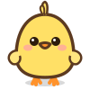

Un cariño infinito
Que desafía al tiempo y la distancia, de la era Mesozoica hasta hoy...
Que desafía al tiempo y la distancia, de la era Mesozoica hasta hoy...
Al compás del moonwalk de Michael Jackson y el cacareo de un pollo ancestral...
Una edición única diseñada con amor para la mejor maestra...
Toca para abrir
Haz clic en el libro para abrir la carta
Una carta del fin del Cretácico
Escrita entre páginas de libros extintos,
al ritmo de un moonwalk y el cacareo
de un pollo que sobrevivió a los dinosaurios.
Prólogo
Hay personas que llegan como los mosasaurus al océano Tethys: inevitables, magnéticas, y capaces de hacer que todo lo demás parezca pequeño en comparación. Tú llegaste así.
En algún libro olvidado del Cretácico Superior, entre fósiles de ammonitas y páginas color arcilla, alguien ya había escrito tu historia. Sólo faltaba que tú aparecieras para confirmarla.
Capítulo I: La Biblioteca
Porque los buenos libros siempre encuentran a su lectora correcta.
Registros de la era en que la educación y el cariño sobrevivieron al impacto del meteorito.
Pág. 2El Tiranosaurus Rex tenía dientes de 30 cm, pero no podía aprobar tu clase de Formación Cívica. Le habría ido reprobado.
El pollo es el pariente vivo más cercano al T-Rex. Lo que significa que cada milanesa lleva 65 millones de años de historia.
Michael Jackson lanzó Thriller en 1982. Los críticos dijeron que era imposible bailar así. Ningún crítico era Michael Jackson.
El Mosasaurus llegó a medir 18 metros. También era la criatura más elegante de su época. Como tú, pero con aletas.
Capítulo II: El Baile
Hay algo en la forma en que Michael Jackson entendía el ritmo que se parece mucho a cómo tú entiendes a tus estudiantes: con una precisión quirúrgica disfrazada de naturalidad.
Cuando "Beat It" suena, la historia sabe que algo importante está pasando. Igual que cuando tú entras a un salón.
"Don't stop 'til you get enough", podría ser un lema pedagógico.
Capítulo III: El Iris y la Constelación
Los paleontólogos estudian el pasado a través de fósiles. Yo estudio el presente a través de tus ojos. Ambos encontramos ahí algo que no esperábamos.
"En el color café de tus ojos
caben el verano de Monterrey,
un libro abierto al mediodía
y el calor exacto de quedarse."
Y en tus mejillas: lunares. Una hermosa constelación de pequeñas constantes, como estrellas que decidieron quedarse en la tierra para ver mejor lo que pasa aquí abajo.
Capítulo IV: La Física del Rizo
Los físicos llevan décadas intentando explicar por qué los rizos se forman así y no de otra manera. La respuesta, que no quieren admitir en sus publicaciones, es que depende de quién los tenga.
Cada rizo guarda una historia diferente. Algunos saben de viento de Monterrey. Otros de madrugadas leyendo. Todos son oro.
Capítulo V: El Mar del Cretácico
Hace 72 millones de años, el Mosasaurus dominaba los mares con una gracia imposible para algo de 18 metros. Los científicos no saben si era feliz.
Yo creo que sí. Creo que era feliz porque tenía el mar entero y porque nadie se atrevía a decirle cómo vivir.
"El Mosasaurus no necesitaba Wi-Fi para saber que estaba en el lugar correcto. Tú tampoco."
Capítulo VI: El Salón
No toda persona que está frente a un pizarrón enseña. Enseñar es otra cosa: es saber cuándo callar para que el otro encuentre la respuesta solo. Eso lo haces tú sin pensarlo.
Tus estudiantes no lo saben todavía, pero dentro de veinte años van a recordar exactamente cómo explicabas, el tono que usabas, la paciencia que tenías para repetir lo mismo de doce maneras distintas hasta que tuviera sentido.
Eso no se aprende. Eso se es.
Los dinosaurios se fueron. Los mosasaurus también. Michael Jackson ya no está. Pero los pollos siguen aquí, pequeños y tenaces, recordándonos que sobrevivir tiene su propia elegancia.
Y tú sigues aquí: con tus rizos, tus lunares, tus ojos café y esa personalidad que no cabe en ningún libro aunque los libros sigan intentándolo.
Desde Puebla, con todo.
...desde que esta carta comenzo a escribirse
A Través del Tiempo
Los mosasaurus reinan el océano Tethys. El mundo es cálido, verde y lleno de criaturas que aún no saben que sus días están contados.
Un asteroide de 12 km golpea la Tierra. Todo cambia. Pero en algún rincón, un pequeño ancestro emplumado sobrevive.
Del Gallus gallus salvaje al pollo doméstico. 65 millones de años de evolución para llegar a la milanesa perfecta.
Michael Jackson lanza el disco más vendido de todos los tiempos. El moonwalk desafía la gravedad. El mundo nunca vuelve a ser igual.
Tras 72 millones de años, el universo finalmente logra lo que intentaba: que una maestra extraordinaria lea estas palabras.
Desliza para explorar la historia
Bonus: El Juego
Toca la pantalla para saltar los meteoritos. Sobrevive al impacto.
Capítulo VII: El Álbum
Pasa el mouse o toca cada foto para revelar los secretos guardados en el reverso...
Tardes de Libros
"Los libros nos enseñan mundos pasados, pero tú me enseñas a vivir el presente con alegría."
Ojos Café y Café Caliente
"Como una taza de café en la mañana de Monterrey, tu presencia es el calor exacto que me reconforta."
El Último Dinosaurio
"Aunque los dinosaurios desaparecieron hace millones de años, mi cariño por ti sobrevive al paso del tiempo."
Capítulo VIII: El Videoclub Pop
Un recorrido nostálgico por las películas, series y bandas sonoras preferidas de Samara...
Desde las carreras a toda velocidad con el Rayo McQueen en Cars 1 al ritmo de la icónica "Life Is a Highway", hasta los días escolares de cantar "Worldwide" imitando las coreografías de Big Time Rush. ¡Nostalgia pura!
La adrenalina sin límites de la famosa bóveda de Río de Janeiro en Rápidos y Furiosos 5 con "Danza Kuduro" sonando a todo volumen en el auto, balanceada con las risas incontrolables en la cabaña del lago de Son como niños 1.
El valor heroico de El Hombre Araña cruzando rascacielos al son de "Hero", combinado con el misticismo de The Weeknd y Travis Scott, las guitarras británicas de Arctic Monkeys, el estilo urbano único de De La Rose y el pop legendario de Britney Spears.
Capítulo IX: El Examen
¿Qué tanto sabes sobre tus alumnos y la historia de la vida?
Otorgado en el Fin del Cretácico
Por ser la maestra más extraordinaria de todos los tiempos. Capaz de guiar con paciencia infinita, inspirar con sabiduría y mantener viva la chispa de la curiosidad, superando incluso la prueba del impacto del meteorito.
